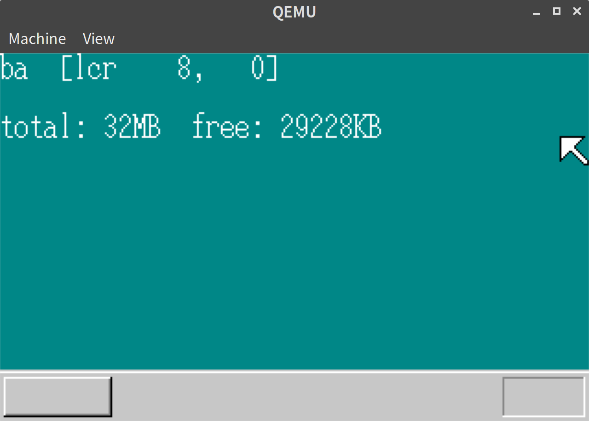
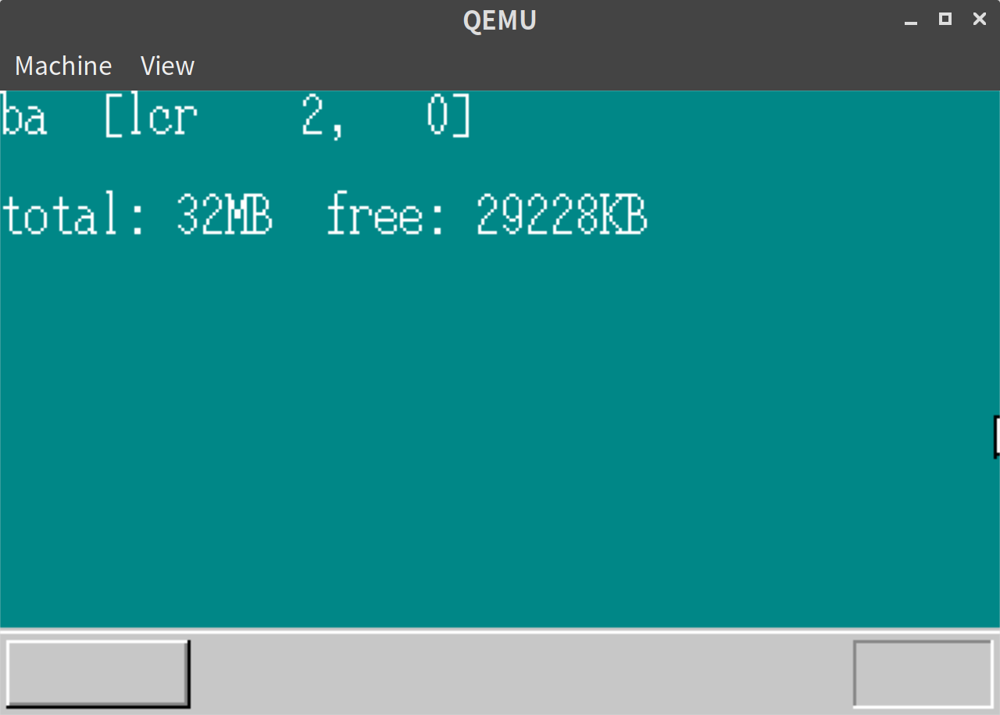
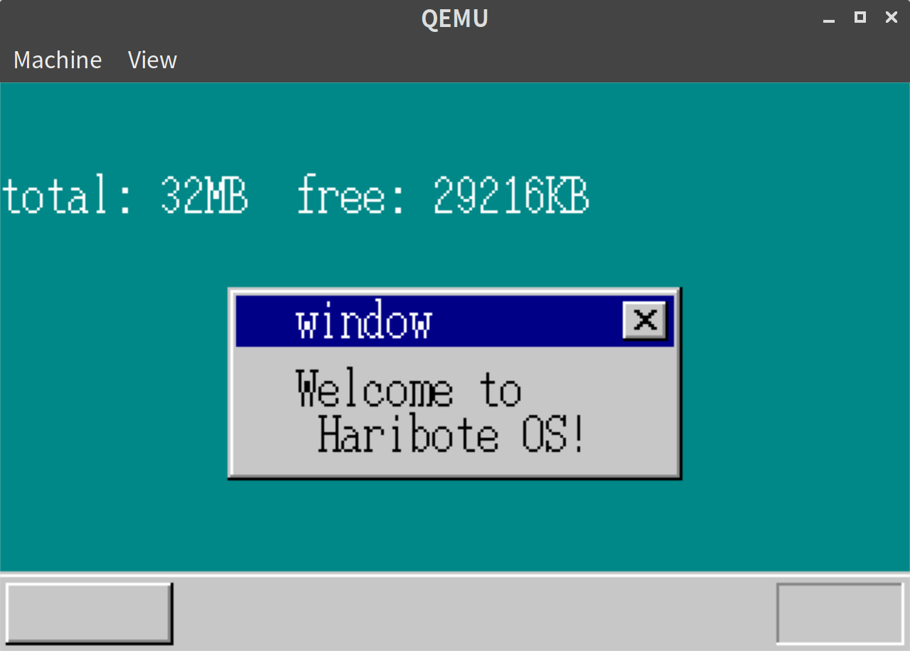
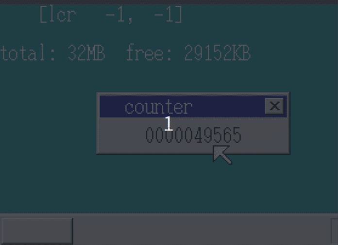

「30日でできる！OS自作入門」をRustで。11日目
Posted on 2019-06-26
「30日でできる！OS自作入門 」のC言語の部分をできるだけRustですすめてみる。今回は11日目の内容。
マウスカーソルを画面端まで移動可能にする
現状、マウスカーソルを画面端のほうに移動すると以下のようにカーソルの右端が画面に接したところでとまってしまう。

これをカーソルが隠れるくらいまで移動可能にする。
// sheet.rs
impl SheetManager {
// 省略
pub fn refresh_part(&self, x0: i32, y0: i32, x1: i32, y1: i32) {
if self.z_max.is_none() {
return;
}
// 画面からはみだした場合の処理を追加
let x0 = max(0, x0);
let y0 = max(0, y0);
let x1 = min(x1, *SCREEN_WIDTH as i32);
let y1 = min(y1, *SCREEN_HEIGHT as i32);
// 省略
pub fn slide_by_diff(&mut self, sheet_index: usize, dx: i32, dy: i32) {
let scrnx = *SCREEN_WIDTH as i32;
let scrny = *SCREEN_HEIGHT as i32;
let sheet = self.sheets_data[sheet_index];
let mut new_x = sheet.x + dx;
let mut new_y = sheet.y + dy;
let xmax = scrnx - 1; // <- scrnx - MOUSE_CURSOR_WIDTHから変更
let ymax = scrny - 1; // <- scrnx - MOUSE_CURSOR_HEIGHTから変更
if new_x < 0 {
new_x = 0;
} else if new_x > xmax {
new_x = xmax;
}
if new_y < 0 {
new_y = 0;
} else if new_y > ymax {
new_y = ymax;
}
self.slide(sheet_index, new_x, new_y);
}
// 省略上記が主要な修正であるが、マイナスの値をうけつけるにあたって、必要な箇所を u32 から i32 にかえるなどの変更も行った。
結果
以下のようにマウスカーソルが画面端に隠れるまで移動可能になった

ウィンドウの表示
次にウィンドウを表示する。
//lib.rs
#[no_mangle]
#[start]
pub extern "C" fn haribote_os() {
// 省略
let shi_bg = sheet_manager.alloc().unwrap();
let shi_mouse = sheet_manager.alloc().unwrap();
let shi_win = sheet_manager.alloc().unwrap(); // <- 追加
let scrnx = *SCREEN_WIDTH as i32;
let scrny = *SCREEN_HEIGHT as i32;
let buf_bg_addr = memman.alloc_4k((scrnx * scrny) as u32).unwrap() as usize;
let buf_win_addr = memman.alloc_4k((160 * 68) as u32).unwrap() as usize; // <- 追加
let buf_mouse_addr =
&buf_mouse as *const [u8; MOUSE_CURSOR_HEIGHT * MOUSE_CURSOR_WIDTH] as usize;
sheet_manager.set_buf(shi_bg, buf_bg_addr, scrnx, scrny, None);
sheet_manager.set_buf(shi_win, buf_win_addr, 160, 68, None); // <- 追加
sheet_manager.set_buf(
// 省略
make_window(buf_win_addr, 160, 68, "window"); // <- 追加
let mut writer = ScreenWriter::new(Some(buf_win_addr), vga::Color::Black, 24, 28, 160, 68); // <- 追加
write!(writer, "Welcome to\n Haribote OS!").unwrap(); // <- 追加
// 省略make_window については vga.rs に以下のように実装した。
// vga.rs
pub fn make_window(buf: usize, xsize: i32, ysize: i32, title: &str) {
let xsize = xsize as isize;
let ysize = ysize as isize;
let closebtn: [&[u8; 16]; 14] = [
b"OOOOOOOOOOOOOOO@",
b"OQQQQQQQQQQQQQ$@",
b"OQQQQQQQQQQQQQ$@",
b"OQQQ@@QQQQ@@QQ$@",
b"OQQQQ@@QQ@@QQQ$@",
b"OQQQQQ@@@@QQQQ$@",
b"OQQQQQQ@@QQQQQ$@",
b"OQQQQQ@@@@QQQQ$@",
b"OQQQQ@@QQ@@QQQ$@",
b"OQQQ@@QQQQ@@QQ$@",
b"OQQQQQQQQQQQQQ$@",
b"OQQQQQQQQQQQQQ$@",
b"O$$$$$$$$$$$$$$@",
b"@@@@@@@@@@@@@@@@",
];
boxfill(buf, xsize, Color::LightGray, 0, 0, xsize - 1, 0);
boxfill(buf, xsize, Color::White, 1, 1, xsize - 2, 1);
boxfill(buf, xsize, Color::LightGray, 0, 0, 0, ysize - 1);
boxfill(buf, xsize, Color::White, 1, 1, 1, ysize - 2);
boxfill(
buf,
xsize,
Color::DarkGray,
xsize - 2,
1,
xsize - 2,
ysize - 2,
);
boxfill(buf, xsize, Color::Black, xsize - 1, 0, xsize - 1, ysize - 1);
boxfill(buf, xsize, Color::LightGray, 2, 2, xsize - 3, ysize - 3);
boxfill(buf, xsize, Color::DarkBlue, 3, 3, xsize - 4, 20);
boxfill(
buf,
xsize,
Color::DarkGray,
1,
ysize - 2,
xsize - 2,
ysize - 2,
);
boxfill(buf, xsize, Color::Black, 0, ysize - 1, xsize - 1, ysize - 1);
let mut writer = ScreenWriter::new(
Some(buf),
Color::White,
24,
4,
xsize as usize,
ysize as usize,
);
write!(writer, "{}", title).unwrap();
for y in 0..14 {
let y = y as usize;
for x in 0..16 {
let x = x as usize;
let c = closebtn[y][x];
let color: Color;
if c == b'@' {
color = Color::Black
} else if c == b'$' {
color = Color::DarkGray;
} else if c == b'Q' {
color = Color::LightGray;
} else {
color = Color::White
}
let ptr = unsafe {
&mut *((buf + (5 + y) * xsize as usize + (xsize as usize - 21 + x)) as *mut Color)
};
*ptr = color;
}
}
}この他、boxfill や print_char が画面幅固定での描画になってしまっていたのを修正した。
結果
以下のようにウィンドウが描画できた。

カウンターの表示
ウィンドウ内にカウンターを表示する。
//lib.rs
#[no_mangle]
#[start]
pub extern "C" fn haribote_os() {
// 省略
let shi_bg = sheet_manager.alloc().unwrap();
let shi_mouse = sheet_manager.alloc().unwrap();
let shi_win = sheet_manager.alloc().unwrap();
let scrnx = *SCREEN_WIDTH as i32;
let scrny = *SCREEN_HEIGHT as i32;
let buf_bg_addr = memman.alloc_4k((scrnx * scrny) as u32).unwrap() as usize;
let buf_win_addr = memman.alloc_4k((160 * 52) as u32).unwrap() as usize; // <- サイズ修正
let buf_mouse_addr =
&buf_mouse as *const [u8; MOUSE_CURSOR_HEIGHT * MOUSE_CURSOR_WIDTH] as usize;
sheet_manager.set_buf(shi_bg, buf_bg_addr, scrnx, scrny, None);
sheet_manager.set_buf(shi_win, buf_win_addr, 160, 52, None); // <- サイズ修正
sheet_manager.set_buf(
// 省略
make_window(buf_win_addr, 160, 52, "counter"); // <- 追加
// window内のテキスト表示を削除
// 省略
let mut count = 0u32; // カウンターを追加
loop {
count += 1;
boxfill(buf_win_addr, 160, Color::LightGray, 40, 28, 119, 43);
let mut writer = ScreenWriter::new(Some(buf_win_addr), vga::Color::Black, 40, 28, 160, 52);
write!(writer, "{:>010}", count).unwrap();
sheet_manager.refresh(shi_win, 40, 28, 120, 44);
// 省略
} else {
sti(); // <- stihltから変更してhltしないようにする。
}ただ、このままだと高速にレンダリングの重ね描きが発生し、画面がチラついてしまう。 そのため、本ではこの後、レンダリングを最低限にするようにしている。
チラつきの抑制
SheetManagerに一番上のSheet番号をもつようなmapを導入して、そのSheetのみ描画するように変更する。
//sheet.rs
pub struct SheetManager {
pub z_max: Option<usize>, // 一番上のSheetのz
pub map_addr: i32, // 追加: 重ね合わせ計算用のマップをもつ
pub sheets: [usize; MAX_SHEETS], // sheets_data上のindexを保持する
pub sheets_data: [Sheet; MAX_SHEETS], // sheetデータの実体
}
impl SheetManager {
pub fn new(map_addr: i32) -> SheetManager {
SheetManager {
z_max: None,
map_addr, // <- 追加
sheets: [0; MAX_SHEETS],
sheets_data: [Sheet::new(); MAX_SHEETS],
}
}
// 省略
pub fn refresh_map(&self, x0: i32, y0: i32, x1: i32, y1: i32, z0: i32) {
if self.z_max.is_none() {
return;
}
let x0 = max(0, x0);
let y0 = max(0, y0);
let x1 = min(x1, *SCREEN_WIDTH as i32);
let y1 = min(y1, *SCREEN_HEIGHT as i32);
for h in (z0 as usize)..=self.z_max.unwrap() {
let si = self.sheets[h as usize];
let sheet = &self.sheets_data[si];
let bx0 = if x0 > sheet.x { x0 - sheet.x } else { 0 } as usize;
let by0 = if y0 > sheet.y { y0 - sheet.y } else { 0 } as usize;
let bx1 = if x1 > sheet.x {
min(x1 - sheet.x, sheet.width)
} else {
0
} as usize;
let by1 = if y1 > sheet.y {
min(y1 - sheet.y, sheet.height)
} else {
0
} as usize;
for by in by0..by1 {
let vy = sheet.y as usize + by;
for bx in bx0..bx1 {
let vx = sheet.x as usize + bx;
let width = sheet.width as usize;
let c = unsafe { *((sheet.buf_addr + by * width + bx) as *const Color) };
if Some(c) != sheet.transparent {
let ptr = unsafe {
&mut *((self.map_addr as *mut u8)
.offset(vy as isize * *SCREEN_WIDTH as isize + vx as isize))
};
*ptr = si as u8;
}
}
}
}
}
// 省略
pub fn refresh_part(&self, x0: i32, y0: i32, x1: i32, y1: i32, z0: i32, z1: i32) {
// 省略
for by in by0..by1 {
let vy = sheet.y as usize + by;
for bx in bx0..bx1 {
let vx = sheet.x as usize + bx;
let width = sheet.width as usize;
let map_si = unsafe {
*((self.map_addr as isize
+ vy as isize * *SCREEN_WIDTH as isize
+ vx as isize) as *const u8)
};
// 一番上のSheetだったらレンダリングするようにする
if si as u8 == map_si {
let c = unsafe { *((sheet.buf_addr + by * width + bx) as *const Color) };
let ptr = unsafe {
&mut *((*VRAM_ADDR as *mut u8)
.offset(vy as isize * *SCREEN_WIDTH as isize + vx as isize))
};
*ptr = c as u8;
}
}
}実行結果
実行してみると以下の通り、マウスを重ねてもチラつかずにカウンターが表示される。(GIFのフレームレートの影響で若干歪んでみえるが、実際はもっときれいに見えている。)

だいぶ i32, u32, isize, usize が乱立してきて型変換が面倒なのでそろそろ整理したほうがいいかもしれない。。
11日目は以上となる。ここまでの内容のコードはyoshitsugu/hariboteos_in_rustのday11としてタグを打ってある。